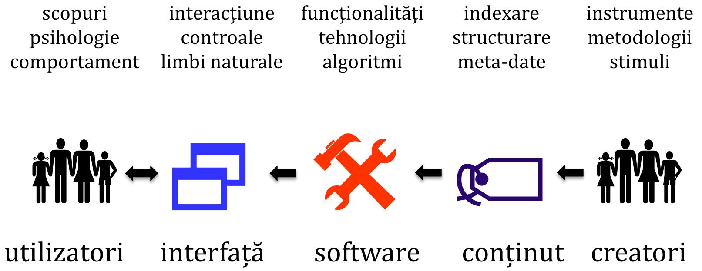
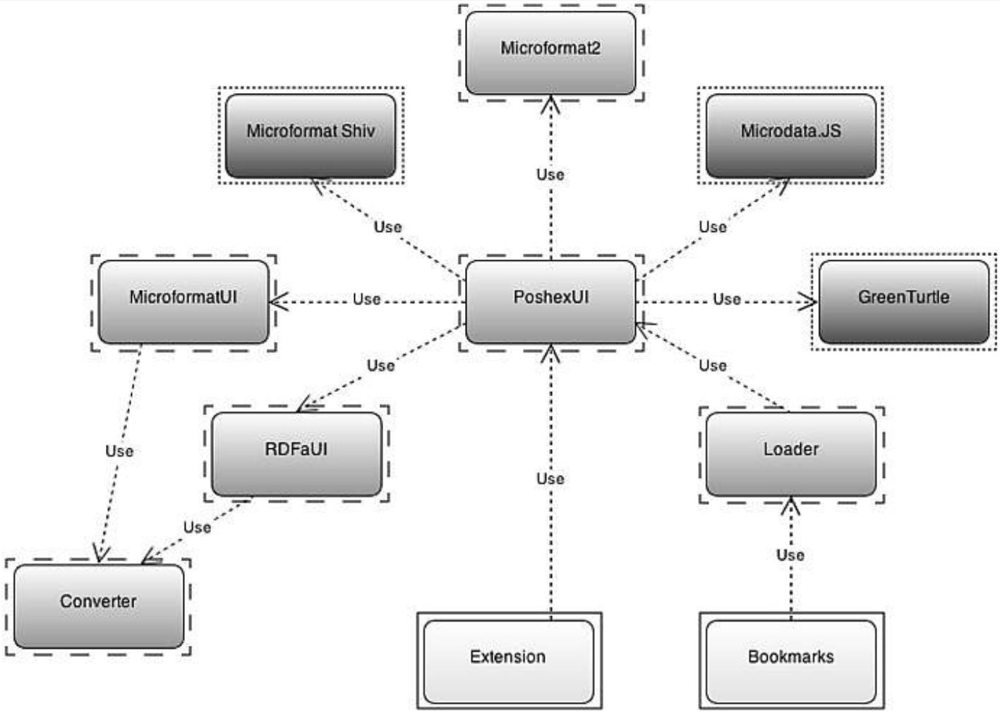

Data publicării: 05.09.2018
Autor articol: Sabin Buraga
Preliminarii
Articolul curent este dedicat unor considerații referitoare la diverse arhitecturi software referitoare la aplicațiile Web de anvergură, plecând de la faptul că arhitectura (conceptuală) pe care se bazează un sistem complex influențează calitatea acestuia.
Vom prezenta mai întâi principiile după care un arhitect de aplicații Web se poate ghida, inspirate din cele formulate la concepția sitului Web dedicat guvernului Regatului Unit al Marii Britanii – gov.uk –, aliniat actualelor problematici ale guvernării digitale (e-government).
- Plecarea la drum cu formularea necesităților utilizatorilor reali (start with user needs).
- Oferirea, în etapa inițială, a funcționalităților cu adevărat esențiale (do less).
- Proiectarea sistemului se va realiza luând în considerație (modelele de) date pe care aplicația le va gestiona (design with data).
- Sarcinile complicate trebuie să rămână în responsabilitatea software-ului, nu a utilizatorului, și – în plus – trebuie să pară simple din punctul de vedere al beneficiarilor aplicației (do the hard work to make it simple).
- De adoptat o metodologie iterativă (iterate; then iterate again).
- Soluția oferită va considera și publicul cu nevoi speciale, inclusiv va detecta și va corecta erorile comise de utlizatori – eventual, în mod automat, convertind valorile introduse greșit în valori permise de sistem; de asemenea, exploatarea în practică a aplicației ar fi de dorit să fie independentă de platforma hardware/software, bucurându-se de caracterul ubicuu al Web-ului (build for inclusion).
- Plasarea în context – fie acesta unul tehnologic, social și/sau cultural (understand context).
- Crearea de servicii digitale, nu doar a unor situri Web de prezentare a informațiilor (build digital services, not Websites) – un aspect foarte important în contextul reutilizării datelor/cunoștințelor via servicii Web și/sau API-uri publice și, mai ales, urmând direcțiile Web-ului semantic și a seturilor de date interconectate (Linked Data). Astfel, datele oferite trebuie să fie aceleași – mai ales din punct de vedere structural și calitativ –, indiferent de maniera de acces (via interfața Web sau via API).
- Asigurarea consistenței datelor, manierelor de prezentare a acestora și de interacțiune cu utilizatorul (i.e. design Web), inclusiv consistența accesului la aceste date – e.g., soluții de autentificare și autorizare, respectarea intimității (privacy), oferirea unor maniere ușor de înțeles pentru partajarea și (re)folosirea informațiilor etc. (be consistent, not uniform).
- Adoptarea unei viziuni deschise care să încurajeze crearea și menținerea unei comunități de practică și a contribuțiilor voluntare provenite din partea unor terțe persoane, organizații sau instituții (make things open; it makes things better).
După cum se poate observa, o parte din cele enumerate mai sus se circumscriu, de asemenea, problematicilor și cercetărilor din domeniul interacțiunii om-calculator.
Alte reguli de bună practică, inclusiv șabloane de proiectare, sunt disponibile la adresa Web http://design-system.service.gov.uk/.
Actorii implicați, inclusiv cele mai importante aspecte de considerat, sunt sintetizate în figura următoare – adaptare după (Crumlish & Malone, 2015):

Drept exemple de metodologii moderne pot fi menționate:
- Aim42 – propunând o suită de practici și șabloane privind evoluția, mentenanța, migrarea și îmbunătățirea sistemelor software;
- The Twelve-Factor App – vizând cu precădere aplicațiile aliniate paradigmei SaaS (Software As A Service).
Arhitecturi Web tipice
Conform (Richards, 2015), cele mai reprezentative arhitecturi software pe care se fundamentează aplicațiile Web actuale:
- Aplicațiile stratificate (layered);
- Conduse de evenimente (event-driven);
- Extensibile (microkernel + plug-in);
- Folosind microservicii (microservices);
- “In nori” (space-based, cloud).
În cadrul acestui articol le vom prezenta pe cele referitoare la aplicații stratificate, conduse de evenimente și, respectiv, extensibile.
Aplicații stratificate
Așa cum am mai discutat pe parcursul unor articole anterioare, aplicațiile stratificate (N-tier) – abordarea de facto – sunt compuse din:
- Nivelul de prezentare (presentation layer) – compus din diverse componente ce facilitează interacțiunea (de obicei, cu utilizatorul).
- Nivelul de procesare sau de control (business logic layer) – oferind funcționalitățile sistemului conceput.
- Nivelul de abstractizare a accesului la date (persistance layer) – definește modelele de date (structura acestora).
În acest context, trebuie avute în vedere:
- demarcarea responsabilităților (separation of concerns) – fiecare strat are un rol bine-stabilit, componentele unui strat vizând funcționalitățile acestuia;
- izolarea (layers of isolation) – modificările operate la un anumit strat nu au impact sau nu afectează componentele din alt strat;
- evitarea situației în care fluxul de cereri traversează fiecare strat, fără a se efectua procesări semnificative în cadrul acestuia (architecture sinkhole anti-pattern).
Uzual, o implementare tipică adoptă binecunoscutul șablon arhitectural MVC (Model View Controller) sau variantele sale (Graca, 2017). Alte amănunte teoretice și practice sunt discutate pe parcursul prelegerilor asociate cursului “Dezvoltarea aplicațiilor Web” (Buraga, 2018).
Aplicații bazate de evenimente
Uzual, acestea sunt adoptate în contextul aplicațiilor distribuite asincrone în vederea asigurării scalabilității – pentru amănunte, a se studia prezentările materiei “Sisteme bazate pe evenimente” (Onica, 2018).
Topologiile principale fie se folosesc de un mediator – evenimentele se procesează în mai mulți pași, necesitând orchestrare –, fie iau în considerație un broker – fluxul de mesaje este distribuit componentelor de procesare a evenimentelor.
Aplicații extensibile
Acest tip de aplicații Web prezintă un sistem principal (core system) și o serie de module independente de tip extensie (plug-in). O astfel de arhitectură poate fi inclusă/utilizată ca parte a altei abordări arhitecturale.
Ca exemplificări, se pot menționa serverul Web Apache, platforma WordPress, sistemele de tip wiki precum DokuWiki, serverul de aplicații PHP, mediul Node.js și multe altele.
Schema modulelor principale ale unei aplicații extensibile vizând extragerea și exportul de microformate, microdate HTML5 și construcții RDFa – proiect de licență al absolventului Tiberiu Pasat – poate fi urmărită în figura următoare.

Referințe bibliografice
● Buraga, S., Dezvoltarea aplicațiilor Web (Web Application Development), Facultatea de Informatică, Universitatea “Alexandru Ioan Cuza” din Iasi, Romania, 2018: http://profs.info.uaic.ro/~busaco/teach/courses/wade/
●Crumlish, C, Malone, E., Designing Social Interfaces, O’Reilly, 2015: http://www.designingsocialinterfaces.com/
● Graca, H., MVC and its alternatives, 2017: http://herbertograca.com/2017/08/17/mvc-and-its-variants/
● Richards M., Software Architecture Patterns, O’Reilly, 2015.
● Onica, E., Sisteme bazate pe evenimente (Event Based Systems), Facultatea de Informatică, Universitatea “Alexandru Ioan Cuza” din Iasi, Romania, 2018: http://profs.info.uaic.ro/~eonica/ebs/
● * * *, Aim42, 2018: http://aim42.github.io/
● * * *, Cloud Native Interactive Landscape, 2018: http://landscape.cncf.io/
●* * *, Gov.uk Government Digital Service, 2018: http://www.gov.uk/government/organisations/government-digital-service
● * * *, Gov.uk Design System, 2018: http://design-system.service.gov.uk/
● * * *, The Twelve-Factor App, 2017: http://12factor.net/